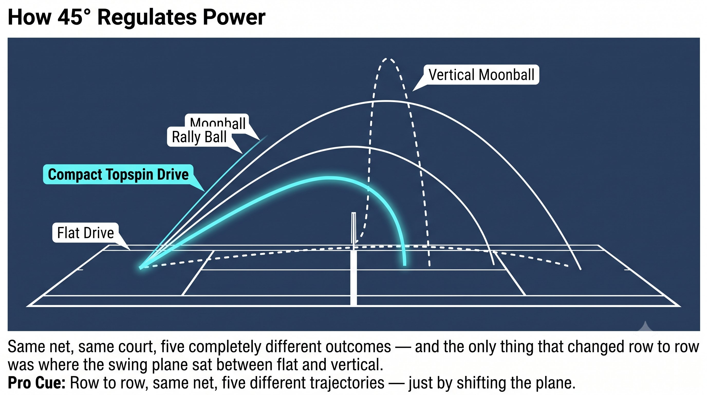

Chương 14: Mặt Phẳng Vung 45 Độ
(Bản dịch tiếng Việt của Chapter 14 trong Sổ Tay Quần Vợt Thống Nhất)
Điểm Ngọt (45°)
Không thẳng đứng, không nằm ngang. 45 độ là nơi drive và topspin trở thành một lực duy nhất.
Một cú vung nằm ngang thuần túy thì phẳng và nhanh, nhưng không có biên độ an toàn, không bóng nặng, không có sự rơi SSC. Một cú vung thẳng đứng thuần túy cho bạn topspin lượn và nhiều biên độ an toàn, nhưng không có sự xuyên thấu — nó chỉ nảy lên mà thôi.
— Henry Phạm

Hình 14.1
Vì Sao Là 45 Độ
Mặt phẳng 45 độ cho bạn cả hai thứ cùng lúc:
– Thành phần tiến: drive, xung lực, sự xuyên thấu của kình.
– Thành phần lên: topspin, biên độ an toàn, sự rớt, một trái bóng nặng nảy lên khỏi mặt sân.
Nguyên Lý Cốt Lõi
Tại 45 độ, bạn chia năng lượng theo tỷ lệ 50/50. Với hình học của sân quần vợt, tỷ lệ đó là tối ưu — bạn vượt qua lưới khoảng ba feet và bóng vẫn rớt xuống trong vạch cuối sân.

Hình 14.2
Mặt Phẳng 45 Độ Thực Sự Là Gì
Đó không phải là góc mặt vợt. Đó là mặt phẳng vung — đường đi của bàn tay bạn qua điểm tiếp xúc — và đưa đường đi đó lên đường chéo 45 độ chính là điều cho phép thành phần tiến và thành phần lên của cú vung cùng tồn tại thay vì cạnh tranh lẫn nhau.
Cách 45° Điều Tiết Công Suất Cùng Figure-8 Và Cú Phanh
Quy Tắc
Một mặt phẳng 45 độ giữ cho tensegrity nạp lực ở cả đường xoắn ốc và đường lưng cùng một lúc — bạn dùng cả cơ chéo bụng và lưng xô cùng nhau, không chỉ một trong hai.
Phanh Trên 45°: Nơi Kình Ra Đời
Cú phanh cũng phải sống trên mặt phẳng 45 độ.
– Forehand: chân trước phanh tiến và lên ở góc 45 độ — bạn cảm thấy nó vặn vào mặt sân và đẩy lên cùng một lúc. Điều đó điều hướng năng lượng lên trên tấm kính 45 độ, nên xung lực đến nơi đã có sẵn topspin trong đó.
– Backhand: ngực phanh lại trong khi vẫn giữ nghiêng bên, nhưng bạn cảm thấy lưng xô phanh lên trên ở góc 45 độ — khuỷu tay ngừng nâng lên và cạnh vợt bật xuyên qua.
– Cú đấm 1-inch của Bruce Lee cũng chạy trên cùng mặt phẳng 45 độ này — nắm đấm đi hơi lên trên, chứ không bao giờ đi ngang. Đó chính xác là thứ nhấc bổng đối thủ khỏi mặt đất.
Mẹo Huấn Luyện
Kiểm tra bằng video từ bên hông: đường đi của bàn tay qua tiếp xúc nên chạy từ túi quần sau đến độ cao vai đối diện — một đường chéo. Nếu đi ngang qua ngực nghĩa là quá ngang. Nếu đi thẳng lên trên vai nghĩa là quá dọc. Đường chéo nghĩa là 45 độ.

Hình 14.3
Tự Kiểm Tra: Bạn Có Đang Ở 45° Không?
Quy Tắc
45 độ chưa bao giờ là một suy nghĩ trong lúc vung. Đó là kết quả nổi lên từ cảm giác push hay saber, cộng một số 8 trên mặt phẳng đó, cộng một cú phanh cứng trên cùng mặt phẳng đó. Bạn không "vung ở 45 độ." Bạn push hay saber trên tấm kính, và 45 độ tự nó xảy ra.
Danh Sách Kiểm Tra 45°
SỐ 8 NHỎ TRÊN KÍNH 45°. PHANH CỨNG TRÊN 45°. XUNG 1 INCH.
– Video từ bên hông: đường tay từ túi quần sau đến vai đối diện nghĩa là 45 độ.

Hình 14.4
– Đường bay của bóng: vươn lên khoảng 3ft qua lưới và rớt mạnh trong 10ft cuối nghĩa là 45 độ.
– Cảm giác cơ thể: đẩy ngực cộng nhấc lưng xô cùng một lúc nghĩa là 45 độ.
– Âm thanh tiếp xúc: một tiếng thịch nặng cộng một tiếng xì nghĩa là 45 độ. Một tiếng tát mỏng nghĩa là quá phẳng. Một tiếng cọ nhẹ nghĩa là quá dọc.
– Phanh: chân trước vặn xuống và lên ở góc 45 độ, cho bạn một xung lực đã có sẵn topspin trong đó.
– Chỉ đẩy ngực nghĩa là quá phẳng. Chỉ nhún vai nghĩa là moonball. Cả hai cùng lúc nghĩa là 45 độ.
Chương Này Dẫn Đến Đâu
Chương này thiết lập 45° — mặt phẳng vung — như biến số trong hệ thống Q-V-ROOT-8-45-Impulse-Kình CORE. Chương 15 bao quát cú phanh và cú xung như cú xung 1-inch, hay phát kình (fa jin). Chương 16 bao quát kình như ba biểu hiện là kết quả.